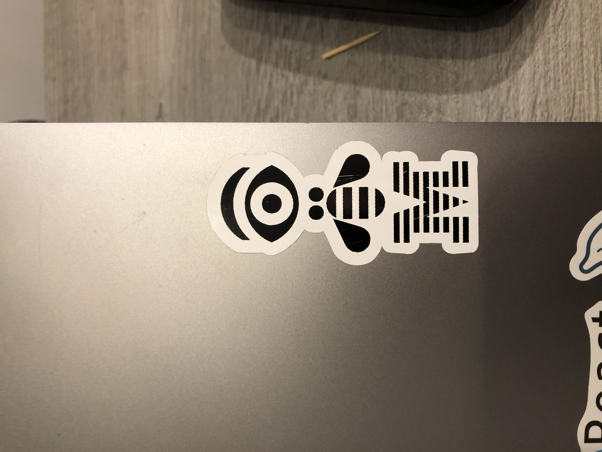

Samen met mijn medestudent Tristan Kenis ben ik naar een seminarie van IBM gegaan in Luik. Wij waren toevallig op dit seminarie uitgekomen op Eventbrite. Omdat het een gratis seminarie was konden we dit natuurlijk niet laten liggen. Zeker omdat je niet elke dag de kans krijgt om een seminarie van IBM bij te wonen. Het seminarie gaf meer inzicht over IoT (Internet of Things) en hoe je dit moet implementeren.
Het eerste gedeelte van het seminarie was meer theoretisch gericht. Zo zagen we eerst wat meer over de geschiedenis van IoT en waar het allemaal in verwerkt zit. Zo zit het bijvoorbeeld in je auto, thermometer en in vele andere apparaten die we elke dag gebruiken. Ook hebben we meer uitleg gekregen over de werking van een Arduino, ESP8266 en Raspberry Pi.
In het tweede gedeelte van het seminarie hebben we wat meer praktijk gekregen. Iedereen kreeg ook een account van IBM Cloud tot zijn beschikking zodat we dit konden gebruiken tijdens het seminarie. We hebben ook wat kunnen experimenteren met Node-RED. Dit is een programmeertool om hardware apparaten, API's en online services op nieuwe en interessante manieren met elkaar te verbinden. Node-RED biedt een browser gebaseerde stroomeditor die het gemakkelijk maakt om stromen met elkaar te verbinden met behulp van het brede scala aan knooppunten in de tool. Flows kunnen vervolgens met één klik worden ingezet voor de runtime.
Tijdens het seminarie heeft de spreker verschillende voorbeelden laten zien. Eén van deze voorbeelden was het nabouwen van een Coyete apparaat. Dit zijn de kleine apparaten die je in je auto kan installeren en die dan de flitsapparaten verklikken. Op het einde van het seminarie hebben we dit dan ook zelf proberen te bouwen. Dit hebben we gedaan door gebruik te maken van een API die data bevat over flitsapparaten. Door dan gebruik te maken van onze huidige locatie konden we dan op een bepaalde afstand een geluid laten afspelen. De Arduino werd ingesteld in een virtuele omgeving. Hierin kon je dan luidspreker koppelen aan de Arduino en je code uploaden naar het apparaat.
Het tweede voorbeeld waaraan we hebben gewerkt was het gebruiken van een temperatuur sensor. We hebben hier gebruik gemaakt van een temperatuur sensor, die gekoppeld was met een ESP8266. Eerst zijn we begonnen met het aanmaken van een ESP8266 in een virtuele omgeving en hier hebben we dan de temperatuur sensor aan gekoppeld. Eens dit gedaan was, hebben we ervoor gezorgd dat we de data konden uitlezen vanuit de sensor. Als de ruimte een bepaald aantal graden had bereikt bijvoorbeeld 25 graden, werd er een melding verstuurt naar een dashboard in IBM Cloud. We konden ook bijhouden hoeveel graden het op een bepaald moment was in de ruimte. Al deze informatie kon dan worden weergeven in hetzelfde dashboard in IBM Cloud.
Een leuke extra die we hebben overgehouden aan het seminarie was dat we na het seminarie ook nog gebruik konden maken van het IBM Cloud account. Zo konden we gebruik maken van enkele gratis features van het platform. We hebben ook nog wat souvenirs gekregen waaronder een T-shirt en sticker van IBM.

Voor dat we naar het seminarie gingen was ik nogal sceptisch. Ik vond het raar dat een bedrijf zoals IBM een gratis seminarie kwam geven. Het was dan ook een lang stuk rijden naar Luik en ik hoopte dan ook dat het een interessant seminarie ging zijn.
Voor mij persoonlijk was het zeer interessante topic. Voordat ik mijn opleiding begon op PXL was ik enorm hard aan het twijfelen tussen Toegepaste Informatica en Elektronica-ICT. Ik heb mij dan ook altijd afgevraagd wat Elektronica-ICT inhield. Door het volgen van dit seminarie is mijn interesse ook weer volop toegenomen. Ik heb mezelf ondertussen ook een Arduino gekocht. Hiermee probeer ik zelf wat kleine projectjes te bouwen.
Zelf heb ik enorm veel bijgeleerd op vlak van IoT. Ik heb onder andere gezien waarin IoT verwerkt wordt en hoe het werkt. Het was dan ook zeer fijn om een hands on ervaring te krijgen met deze technologie. Het was dan ook zeker een pluspunt om dit allemaal uitgelegd te krijgen door een werknemer van IBM zelf. Het was ook fijn dat je geen voorkennis moest hebben van het topic. Alles werd vanaf het begin uitgelegd.
Nu dat ik meer kennis heb over IoT, ga ik proberen het voorbeeld van de temperatuur sensor zelf te implementeren thuis. Het seminarie heeft mijn interesse enorm doen groeien. Het heeft me zelfs aan het twijfelen gezet om nog door te studeren voor een diploma in Elektronica-ICT. Ik vind het dan ook zeker een geslaagd seminarie als ik nu zie wat de uitkomst ervan is.